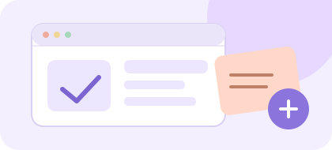
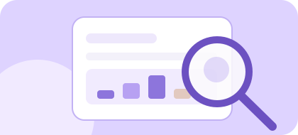
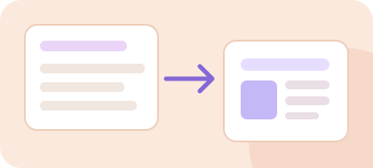

01 / EXPLORAR

Discovery, ideación y testing
Encontrá foco para definir problemas, explorar ideas y validar soluciones.
- Definición del problema
- Ideación y priorización
- Flujos y navegación
- Pruebas de usabilidad
Te acompaño a destrabar desafíos de UX, ordenar tus decisiones y convertir dudas en próximos pasos concretos para tu proyecto.
Es normal tener buenas ideas y no saber cuál es el mejor siguiente paso. Una segunda mirada puede ayudarte a encontrar foco.
Contame qué necesitásTenés una idea, pero no sabés cómo empezar a validarla.
↗Necesitás investigar a tus usuarios, pero no sabés qué método elegir.
↗Tu flujo, navegación o experiencia necesita más claridad.
↗Querés documentar mejor para colaborar con desarrollo.
↗Tres espacios prácticos, personalizados y enfocados en lo que necesitás resolver hoy.

Encontrá foco para definir problemas, explorar ideas y validar soluciones.

Tomá mejores decisiones a partir de lo que necesitás conocer de tus usuarios.

Comunicá tus decisiones de diseño con claridad y mejorá el trabajo en equipo.
Sin procesos complicados. Un espacio para hablar de tu desafío, ordenar ideas y avanzar con intención.
Solicitar consultoríaElegí el servicio y completá un formulario breve sobre lo que necesitás.
Te contacto por correo para acordar fecha, disponibilidad y pago.
Durante 60 minutos nos enfocamos en tus preguntas y decisiones UX.
Terminamos identificando ideas y acciones concretas para continuar.
No se trata de darte respuestas genéricas, sino de trabajar sobre tu contexto para que puedas avanzar con mayor seguridad en tus decisiones.
Creo en el diseño como una forma de comprender problemas y crear experiencias más claras, útiles y humanas.
En estas sesiones quiero acompañarte a mirar tu desafío desde otra perspectiva, conectar investigación y diseño con decisiones prácticas, y encontrar un camino propio para tu proyecto.
Conocer mi portafolio¿Algo más que quieras saber? Podés incluir tus preguntas cuando completes el formulario.
Contame qué te gustaría resolver. Voy a leer tu mensaje y responderte por correo para ver cómo podemos trabajar en ello.